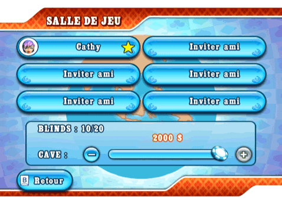

22 |
Chat et invitations |
 |
Quand vous jouez en ligne, vous pouvez choisir parmi une liste de messages de chat prédéfinis et les envoyer aux autres joueurs afin de bluffer, interpeler ou féliciter vos adversaires en ligne. Pour accéder au menu du chat en ligne, sélectionnez l'icône Chat dans le coin en bas à droite de l'écran. Si vous ne souhaitez pas recevoir de messages, désélectionnez cette option dans la section 'Options' du menu de pause.  Sélectionner l'icône Chat vous permettra aussi d'afficher le menu 'Inviter amis', qui est une mini-version de votre liste d'amis. Vous pourrez inviter des amis tant que la partie n'est pas une partie hébergée par un autre joueur où seuls les amis sont acceptés. Les invitations à joindre une partie entre amis apparaîtront sous la forme d'un message Chat avec une icône de confirmation. Salle de jeu  Avant le début d'une partie multijoueur, les joueurs se retrouvent dans la salle de jeu. Dans les parties mondiales, les joueurs peuvent inviter leurs amis du moment qu'il y a des places libres. Il suffit de sélectionner un emplacement et une mini-version de votre liste d'amis apparaîtra. Pour les Cash Games, la cave est payée dans la salle de jeu. Quand vous êtes prêt, il vous suffit de sélectionner l'icône 'Prêt' pour informer l'hôte et les autres joueurs de votre statut. Mais n'oubliez pas que l'hôte peut démarrer la partie à tout moment, peu importe votre statut. Dans ce cas, la cave la plus importante que vous puissiez avoir sera automatiquement choisie. L'hôte sera toujours désigné par une étoile jaune. Lui seul peut réserver des emplacements dans les parties mondiales ou inviter des gens dans des parties entre amis. Les parties en mode Tournoi ne peuvent commencer que quand tous les joueurs sont prêts. |
 |
 |
 |